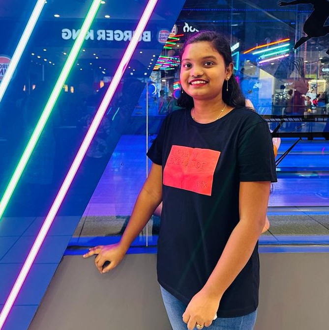

QUEATY NANNETI
I BELIEVE IN
EAT();SLEEP():CODE():REPEAT
About
I'm a student learning about computers and how to make them do cool things! I really enjoy coding because it's like solving puzzles and bringing ideas to life. From making websites to creating fun programs, I like the feeling of making things work. I'm always excited to learn new stuff and see how technology can do amazing things. I believe in the power of coding to bring ideas to life and am excited to embrace the endless possibilities it presents. The excitment of having the power to bring ideas to life on my own sounded amazing and that's when I decided to purse Web development Recently, I learnt Full Stack Development. I have knowledge of HTML, CSS and JavaScript, Java, C++ and Data Structures.
MY PORTFOLIO
Some of my best projects so far.
PERSONAL BLOG - A blog where I pen my own thoughts on programming.
TIC TAC TOE - Complete Tic Tac Toe game along with GUI using Java
TIME TABLE GENERATOR - A web application for automatic time table generation
TECHNICAL SKILLS
- HTML
- CSS
- JAVASCRIPT
CONTACT ME
📱-82978 18468
📧-queatynanneti6@gmail.com